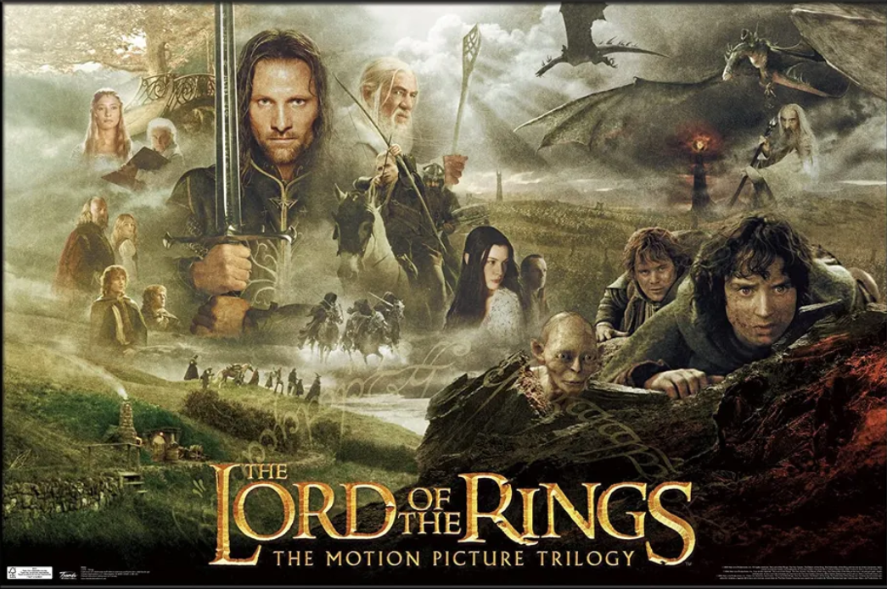

Did You Know?
Did you knowM&M's chocolate stands for the initials
for its inventors Mars and Murrie
Did You Know?

Ralph Lauren's original name was Ralph Lifshitz

TOP TEN MOVIES
The Lord of The Rings: The Fellowship of the Ring
An ancient Ring thought lost for centuries has been found, and through a strange twist of fate has been given to a small Hobbit named Frodo. When Gandalf discovers the Ring is in fact the One Ring of the Dark Lord Sauron, Frodo must make an epic quest to the Cracks of Doom in order to destroy it. However, he does not go alone. He is joined by Gandalf, Legolas the elf, Gimli the Dwarf, Aragorn, Boromir, and his three Hobbit friends Merry, Pippin, and Samwise. Through mountains, snow, darkness, forests, rivers and plains, facing evil and danger at every corner the Fellowship of the Ring must go. Their quest to destroy the One Ring is the only hope for the end of the Dark Lords reign.
Seven
Taking place in a nameless city, Se7en follows the story of two homicide detectives tracking down a sadistic serial killer (Kevin Spacey) who chooses his victims according to the seven deadly sins. Brad Pitt stars as Detective David Mills, a hopeful but naive rookie who finds himself partnered with veteran Detective William Somerset (Morgan Freeman). Together they trace the killer's every step, witnessing the aftermath of his horrific crimes one by one as the victims pile up in rapid succession, all the while moving closer to a gruesome fate neither of them could have predicted.
The Prestige
In the end of the nineteenth century, in London, Robert Angier, his beloved wife Julia McCullough, and Alfred Borden are friends and assistants of a magician. When Julia accidentally dies during a performance, Robert blames Alfred for her death, and they become enemies. Both become famous and rival magicians, sabotaging the performance of the other on the stage. When Alfred performs a successful trick, Robert becomes obsessed trying to disclose the secret of his competitor with tragic consequences.
Me Before You
Lou Clark knows lots of things. She knows how many footsteps there are between the bus stop and home. She knows she likes working in The Buttered Bun tea shop and she knows she might not love her boyfriend Patrick. What Lou doesn't know is she's about to lose her job or that knowing what's coming is what keeps her sane. Will Traynor knows a road accident took away his desire to live. He knows everything feels very small and rather joyless now and he knows exactly how he's going to put a stop to that. What Will doesn't know is that Lou is about to burst into his world in a riot of color. And neither of them knows they're going to change each other for all time.
Harry Potter and the Philosopher's Stone
This is the tale of Harry Potter (Daniel Radcliffe), an ordinary eleven-year-old boy serving as a sort of slave for his aunt and uncle who learns that he is actually a wizard and has been invited to attend the Hogwarts School for Witchcraft and Wizardry. Harry is snatched away from his mundane existence by Rubeus Hagrid (Robbie Coltrane), the groundskeeper for Hogwarts, and quickly thrown into a world completely foreign to both him and the viewer. Famous for an incident that happened at his birth, Harry makes friends easily at his new school. He soon finds, however, that the wizarding world is far more dangerous for him than he would have imagined, and he quickly learns that not all wizards are ones to be trusted.
The Chronicles of Narnia: Prince Caspian
Four siblings are sent away from home during the blitz of WWII. They are sent to be watched over by an old Professor Kirke, who owns a massive mansion. Once there, they stumble upon an enormous wardrobe which transports them to the world of Narnia. Narnia itself was once a peaceful realm filled with talking animals, fauns, Giants and dwarves that is now under a cursed eternal winter by the villainous White Witch. With aid from the majestic lion Aslan, the four lead Narnia into an all out war as they fight to outwit the Witch and restore peace to the land.
Pirates of the Caribbean: The Curse of the Black Pearl
This swash-buckling tale follows the quest of Captain Jack Sparrow, a savvy pirate, and Will Turner, a resourceful blacksmith, as they search for Elizabeth Swann. Elizabeth, the daughter of the governor and the love of Will's life, has been kidnapped by the feared Captain Barbossa. Little do they know, but the fierce and clever Barbossa has been cursed. He, along with his large crew, are under an ancient curse, doomed for eternity to neither live, nor die. That is, unless a blood sacrifice is made.
Furious 7
After defeating international terrorist Owen Shaw, Dominic Toretto (Vin Diesel), Brian O'Conner (Paul Walker) and the rest of the crew have separated to return to more normal lives. However, Deckard Shaw (Jason Statham), Owen's older brother, is thirsty for revenge. A slick government agent offers to help Dom and company take care of Shaw in exchange for their help in rescuing a kidnapped computer hacker who has developed a powerful surveillance program.
Parasite
Jobless, penniless, and, above all, hopeless, the unmotivated patriarch, Ki-taek, and his equally unambitious family--his supportive wife, Chung-sook; his cynical twentysomething daughter, Ki-jung, and his college-age son, Ki-woo--occupy themselves by working for peanuts in their squalid basement-level apartment. Then, by sheer luck, a lucrative business proposition will pave the way for an ingeniously insidious scheme, as Ki-woo summons up the courage to pose as an English tutor for the teenage daughter of the affluent Park family. Now, the stage seems set for an unceasing winner-take-all class war. How does one get rid of a parasite?
Hokkabaz
Iskender is a failure as a magician. He knows his tricks, but the audience doesn't catch on and when the 'sawing a woman in half' part of his show goes terribly wrong Iskenders employer, club owner Ayhan, is fed up with him too. Iskender and his assistant and friend 'Maradona' are devastated. Where will they get money now to finally get their eyes lasered and pay the rent? Iskender has a great idea; leave Istanbul and do a small tour in Anatolia. For that they need the caravan of his brother-in-law and that caravan is currently occupied by Iskenders father, the grumpy and seemingly senile Sait. There's no other choice than to bring him along. Luckily Sait is a good bargainer and he lands Iskender a job on a wedding in a village where they are stranded with car trouble. Reluctantly he agrees, but it isn't going as planned. How is he going to explain the actual disappearance of the bride Fatma in one of his tricks?
Did you knowM&M's chocolate stands for the initials
for its inventors Mars and Murrie
Ralph Lauren's original name was Ralph Lifshitz